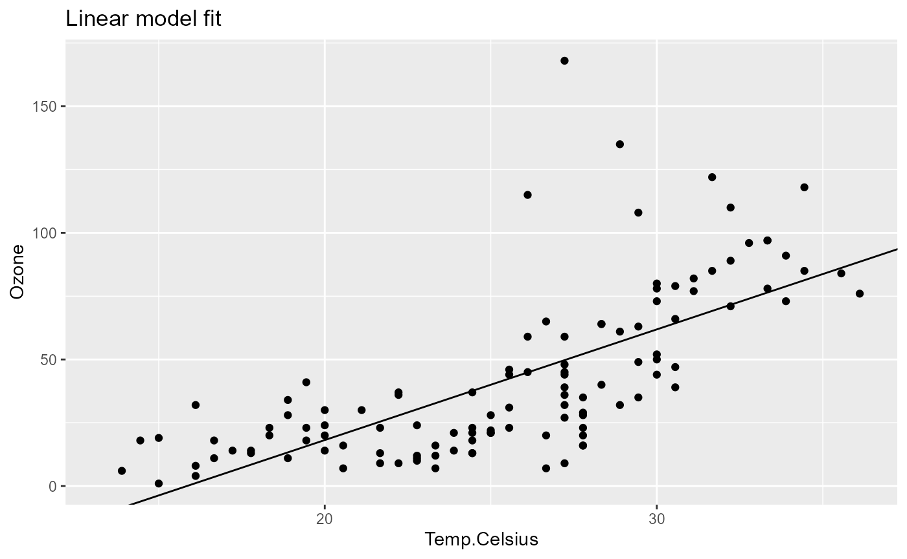
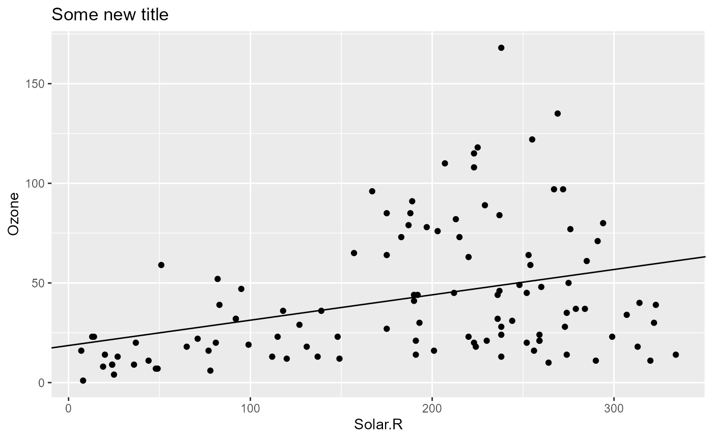
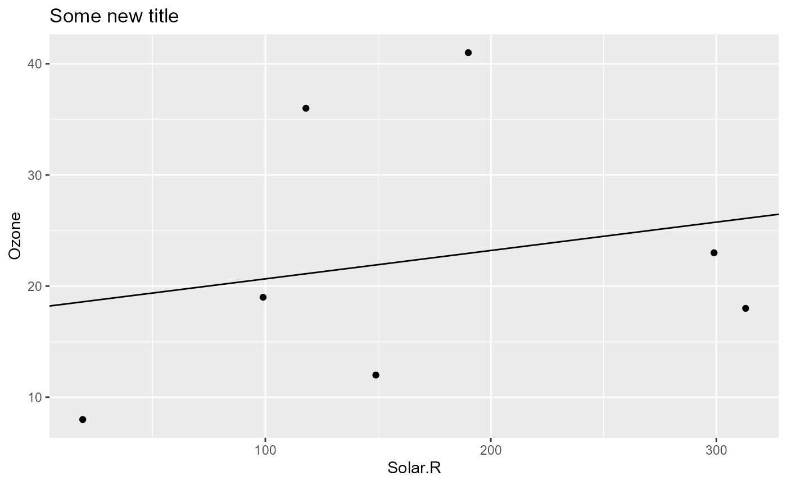

A simple example to get started
In this example, we’ll use base R’s airquality dataset.
head(airquality)
# Ozone Solar.R Wind Temp Month Day
# 1 41 190 7.4 67 5 1
# 2 36 118 8.0 72 5 2
# 3 12 149 12.6 74 5 3
# 4 18 313 11.5 62 5 4
# 5 NA NA 14.3 56 5 5
# 6 28 NA 14.9 66 5 6Our goal is to create an analysis pipeline that performs the following steps:
- add new data column
Temp.Celsiuscontaining the temperature in degrees Celsius - fit a linear model to the data
- plot the data and the model fit.
In the following, we’ll show how to define and run the pipeline, how to inspect the output of specifics steps, and finally how to re-run the pipeline with different parameter settings, which is one of the selling points of using such a pipeline.
Define the pipeline
For easier understanding, we go step by step. First, we create a new pipeline with the name “my-pipeline” and the airquality dataset as input data.
Let’s view the pipeline in it’s table form after initialization.
pip
# step depends out keepOut group state
# <char> <list> <list> <lgcl> <char> <char>
# 1: data [NULL] FALSE data NewHere, each step is represented by one row in the table where the
step column lists the name of the step and the
state column shows the current state of the step. For now,
don’t worry about the other columns - they are explained later.
As you can see, the data is always the first step in the pipeline and
initially it is in state New, which means the pipeline has
not been run yet.
Next, we add a step called data_prep, which consists of
a function that takes the output of the data step as its
first argument, adds a new column and returns the modified data as its
output. To refer to the output of an earlier pipeline step, we just
write the name of the step preceded with the tilde (~) operator.
pip$add(
"data_prep",
function(data = ~data) {
replace(data, "Temp.Celsius", (data[, "Temp"] - 32) * 5/9)
}
)Again, let’s inspect the pipeline.
pip
# step depends out keepOut group state
# <char> <list> <list> <lgcl> <char> <char>
# 1: data [NULL] FALSE data New
# 2: data_prep data [NULL] FALSE data_prep NewA second step called data_prep was added and it depends
on the data step as can be seen in column
depends, which will list all dependencies of a step.
Next, we add a step called model_fit, which fits a
linear model to the data. The function takes the output of the
data_prep and defines a parameter xVar, which
is used to specify the variable that is used as predictor in the linear
model.
pip$add(
"model_fit",
function(
data = ~data_prep,
xVar = "Temp.Celsius"
) {
lm(paste("Ozone ~", xVar), data = data)
}
)Lastly, we add a step called model_plot, which plots the
data and the linear model fit. The function uses the output from both
the model_fit and the data_prep step. It also
defines the xVar parameter and a parameter
title, which is used as the title of the plot.
pip$add(
"model_plot",
function(
model = ~model_fit,
data = ~data_prep,
xVar = "Temp.Celsius",
title = "Linear model fit"
) {
coeffs <- coefficients(model)
ggplot(data) +
geom_point(aes(.data[[xVar]], .data[["Ozone"]])) +
geom_abline(intercept = coeffs[1], slope = coeffs[2]) +
labs(title = title)
}
)This completes our pipeline, which now looks as follows:
pip
# step depends out keepOut group state
# <char> <list> <list> <lgcl> <char> <char>
# 1: data [NULL] FALSE data New
# 2: data_prep data [NULL] FALSE data_prep New
# 3: model_fit data_prep [NULL] FALSE model_fit New
# 4: model_plot model_fit,data_prep [NULL] FALSE model_plot NewIn the last line, we see that the model_plot step
depends on both the model_fit and data_prep
step. To visualize a pipeline, we can use the get_graph()
method, which returns a list of arguments that can be passed to the
visNetwork function from the visNetwork
package.
library(visNetwork)
do.call(visNetwork, args = pip$get_graph()) |>
visHierarchicalLayout(direction = "LR")Pipeline integrity
A key feature of pipeflow is that the integrity of a
pipeline is verified at definition time. To see this, let’s try to add
another step that is referring to a step that does not exist:
pip$add(
"another_step",
function(data = ~foo) {
data
}
)
# Error: step 'another_step': dependency 'foo' not foundpipeflow immediately signals an error and the pipeline
remains unchanged:
pip
# step depends out keepOut group state
# <char> <list> <list> <lgcl> <char> <char>
# 1: data [NULL] FALSE data New
# 2: data_prep data [NULL] FALSE data_prep New
# 3: model_fit data_prep [NULL] FALSE model_fit New
# 4: model_plot model_fit,data_prep [NULL] FALSE model_plot NewRun the pipeline and inspect the output
To run the pipeline, we simply call the run() method on
the pipeline, which will produce the following output:
pip$run()
# INFO [2025-07-27 10:40:55.318] Start run of 'my-pipeline' pipeline:
# INFO [2025-07-27 10:40:55.350] Step 1/4 data
# INFO [2025-07-27 10:40:55.359] Step 2/4 data_prep
# INFO [2025-07-27 10:40:55.382] Step 3/4 model_fit
# INFO [2025-07-27 10:40:55.386] Step 4/4 model_plot
# INFO [2025-07-27 10:40:55.398] Finished execution of steps.
# INFO [2025-07-27 10:40:55.398] Done.Let’s inspect the pipeline again.
pip
# step depends out keepOut group state
# <char> <list> <list> <lgcl> <char> <char>
# 1: data <data.frame[153x6]> FALSE data Done
# 2: data_prep data <data.frame[153x7]> FALSE data_prep Done
# 3: model_fit data_prep <lm[13]> FALSE model_fit Done
# 4: model_plot model_fit,data_prep <gg[11]> FALSE model_plot DoneWe can see that the state of all steps have been changed
from New to Done, which graphically is
represented by the color change from blue to green.
In addition, the output was added in the out column. We
can inspect the output of a specific step by calling the
get_out() method on the pipeline.
pip$get_out("model_fit")
#
# Call:
# lm(formula = paste("Ozone ~", xVar), data = data)
#
# Coefficients:
# (Intercept) Temp.Celsius
# -69.277 4.372
pip$get_out("model_plot")
Change parameters of the pipeline
Any parameter of the pipeline that is not bound to a
specific step (i.e. is not defined with the tilde (~) operator) can be
changed by calling the set_params() method on the pipeline.
Let’s first list all unbound parameters:
pip$get_params()
# $model_fit
# $model_fit$xVar
# [1] "Temp.Celsius"
#
#
# $model_plot
# $model_plot$xVar
# [1] "Temp.Celsius"
#
# $model_plot$title
# [1] "Linear model fit"Now let’s assume we want to change the xVar in the
entire pipeline to "Solar.R". We can do this simply as
follows:
pip$set_params(list(xVar = "Solar.R"))
pip$get_params()
# $model_fit
# $model_fit$xVar
# [1] "Solar.R"
#
#
# $model_plot
# $model_plot$xVar
# [1] "Solar.R"
#
# $model_plot$title
# [1] "Linear model fit"Changing the parameters of the pipeline at least has an effect on all steps that depend on the changed parameter.
pip
# step depends out keepOut group state
# <char> <list> <list> <lgcl> <char> <char>
# 1: data <data.frame[153x6]> FALSE data Done
# 2: data_prep data <data.frame[153x7]> FALSE data_prep Done
# 3: model_fit data_prep <lm[13]> FALSE model_fit Outdated
# 4: model_plot model_fit,data_prep <gg[11]> FALSE model_plot OutdatedWe can see that the model_fit and
model_plot steps are now in state Outdated
(graphically indicated by the orange color), which means that they need
to be rerun. We can do this by calling the run() method on
the pipeline again.
pip$run()
# INFO [2025-07-27 10:40:56.401] Start run of 'my-pipeline' pipeline:
# INFO [2025-07-27 10:40:56.403] Step 1/4 data - skip 'done' step
# INFO [2025-07-27 10:40:56.403] Step 2/4 data_prep - skip 'done' step
# INFO [2025-07-27 10:40:56.404] Step 3/4 model_fit
# INFO [2025-07-27 10:40:56.408] Step 4/4 model_plot
# INFO [2025-07-27 10:40:56.419] Finished execution of steps.
# INFO [2025-07-27 10:40:56.419] Done.The outdated steps were re-run as expected and the output was updated accordingly.
pip$get_out("model_plot")To just change the title of the plot, obviously only the
model_plot step needs to be rerun.
pip$set_params(list(title = "Some new title"))
pip
# step depends out keepOut group state
# <char> <list> <list> <lgcl> <char> <char>
# 1: data <data.frame[153x6]> FALSE data Done
# 2: data_prep data <data.frame[153x7]> FALSE data_prep Done
# 3: model_fit data_prep <lm[13]> FALSE model_fit Done
# 4: model_plot model_fit,data_prep <gg[11]> FALSE model_plot Outdated
pip$run()$get_out("model_plot")
# INFO [2025-07-27 10:40:56.781] Start run of 'my-pipeline' pipeline:
# INFO [2025-07-27 10:40:56.782] Step 1/4 data - skip 'done' step
# INFO [2025-07-27 10:40:56.783] Step 2/4 data_prep - skip 'done' step
# INFO [2025-07-27 10:40:56.784] Step 3/4 model_fit - skip 'done' step
# INFO [2025-07-27 10:40:56.785] Step 4/4 model_plot
# INFO [2025-07-27 10:40:56.790] Finished execution of steps.
# INFO [2025-07-27 10:40:56.791] Done.
If instead we were to change the input data, since all steps depend on it, we expect all steps to be rerun.
pip$set_data(airquality[1:10, ])
pip
# step depends out keepOut group state
# <char> <list> <list> <lgcl> <char> <char>
# 1: data [NULL] FALSE data New
# 2: data_prep data <data.frame[153x7]> FALSE data_prep Outdated
# 3: model_fit data_prep <lm[13]> FALSE model_fit Outdated
# 4: model_plot model_fit,data_prep <gg[11]> FALSE model_plot Outdated
pip$run()$get_out("model_plot")
# INFO [2025-07-27 10:40:57.073] Start run of 'my-pipeline' pipeline:
# INFO [2025-07-27 10:40:57.074] Step 1/4 data
# INFO [2025-07-27 10:40:57.077] Step 2/4 data_prep
# INFO [2025-07-27 10:40:57.082] Step 3/4 model_fit
# INFO [2025-07-27 10:40:57.085] Step 4/4 model_plot
# INFO [2025-07-27 10:40:57.094] Finished execution of steps.
# INFO [2025-07-27 10:40:57.094] Done.
Try setting non-existing parameters
Last but not least let’s see what happens if we are trying to set parameters that don’t exist in the pipeline, which mostly happens due to accidental misspells.
pip$set_params(list(titel = "misspelled variable name", foo = "my foo"))
# Warning in pip$set_params(list(titel = "misspelled variable name", foo = "my foo")): Trying to set
# parameters not defined in the pipeline: titel, fooAs you see, a warning is given to the user hinting at the respective parameter names, which makes fixing any misspells straight-forward.
Next, let’s see how to modify the pipeline.